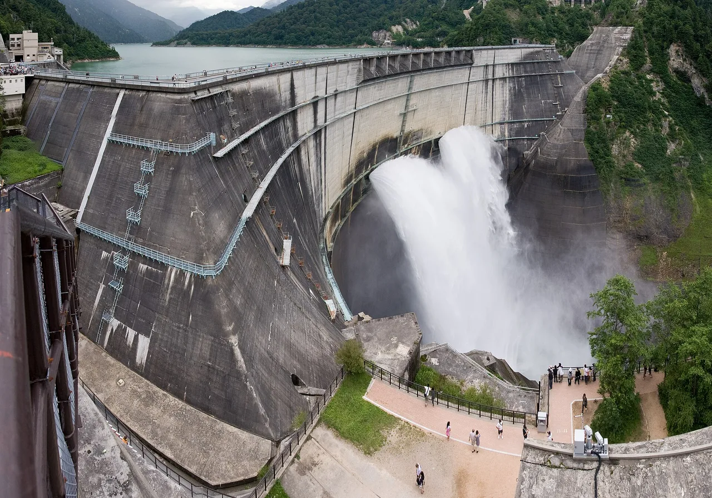

Toyama Travel Guide for Japanese Learners
Towering snow walls in the Alps and glassy bays of firefly squid.

Toyama faces the sea below the Northern Japan Alps. The Tateyama Kurobe Alpine Route carves through corridors of snow up to 20 m high in spring, an unforgettable journey.
History & background
Toyama (富山) prospered from medicine peddlers and shipping; in the mountains, the Gokayama (五箇山) hamlets kept their steep thatched gasshō houses for centuries, now UNESCO-listed.
What to see
- Tateyama Kurobe Alpine Route and the snow walls
- Kurobe Gorge railway
- Gokayama's thatched gasshō villages (UNESCO)
- Zuiryū-ji temple in Takaoka
Hidden gems
- Oyama Jinja shrine sits at 3,003m atop Tateyama mountain, rewarding alpine hikers with ancient wooden halls and panoramic Kurobe Bay views.
- Imizu City's Kodokan museum preserves samurai-era educational philosophy in an authentic Edo-period schoolhouse with hand-written teaching materials.
- Fugan Village in Nanto offers seasonal farm stays where visitors harvest vegetables, prepare local dishes, and sleep in restored gasshō farmhouses.
Some links above are affiliate links. We may earn a commission at no extra cost to you. We only list services we'd use ourselves.
What to eat
Firefly squid (hotaru-ika) and white shrimp.
Getting there & when to go
Getting there: Toyama is ~2h10m from Tokyo by Hokuriku Shinkansen.
Best time: Mid-April to June for the snow walls; spring for firefly squid season.
When to go — season by season
The Tateyama Kurobe Alpine Route (立山黒部アルペンルート) opens mid-April with snow walls up to 20 m. Spring brings firefly squid; autumn colours the Kurobe Gorge (黒部峡谷).
Local culture
Toyama's craftsmanship centers on *takayama-nuri* (高山漆器), a centuries-old lacquerware technique using natural plant dyes. You'll spot these glossy wooden bowls and trays in restaurants and shops—each piece bears visible brush strokes reflecting individual artisan skill passed through generations.
Daily life in coastal towns revolves around seasonal fishing rhythms. Spring brings firefly squid hunts at dawn; locals eat them raw or grilled within hours. Visit morning markets to see fishmongers sorting catches by size, and observe how entire families still prepare preserved fish for winter storage.
A suggested visit
Cross the Alpine Route between Toyama and Nagano in spring for the snow corridor, or ride the little Kurobe Gorge railway in autumn. Add Gokayama's thatched villages for a quieter alternative to Shirakawa-gō.
Seasonal tip: Book Alpine Route trains by late February for mid-April snow-wall visits, as spring weekends fill within 2–3 weeks; avoid Golden Week (late April–early May) crowds by visiting Tuesday–Thursday instead.
Local etiquette: On the Tateyama Kurobe Alpine Route, stay strictly within marked paths on snow walls—the walls are structurally fragile, and stepping beyond designated areas damages terrain and endangers fellow visitors.
The Alpine Route's snow walls open mid-April — it's closed in deep winter.
Some links above are affiliate links. We may earn a commission at no extra cost to you. We only list services we'd use ourselves.
Common questions
Q. When is the best time to visit Toyama?
A. Mid-April to June offers two experiences: 20 m snow walls on the Tateyama Kurobe Alpine Route and firefly squid season. Spring is ideal, but book accommodations early as crowds peak during snow wall season.
Q. How do I get to Toyama from Tokyo?
A. The Hokuriku Shinkansen takes about 2 hours 10 minutes from Tokyo. It's the fastest option and connects directly to Toyama Station, making onward travel to alpine routes straightforward.
Q. What makes Toyama's food special?
A. Firefly squid (hotaru-ika) and white shrimp are local specialties found in spring. These delicacies showcase Toyama's rich bay, and trying them fresh at local restaurants is far superior to packaged souvenirs.